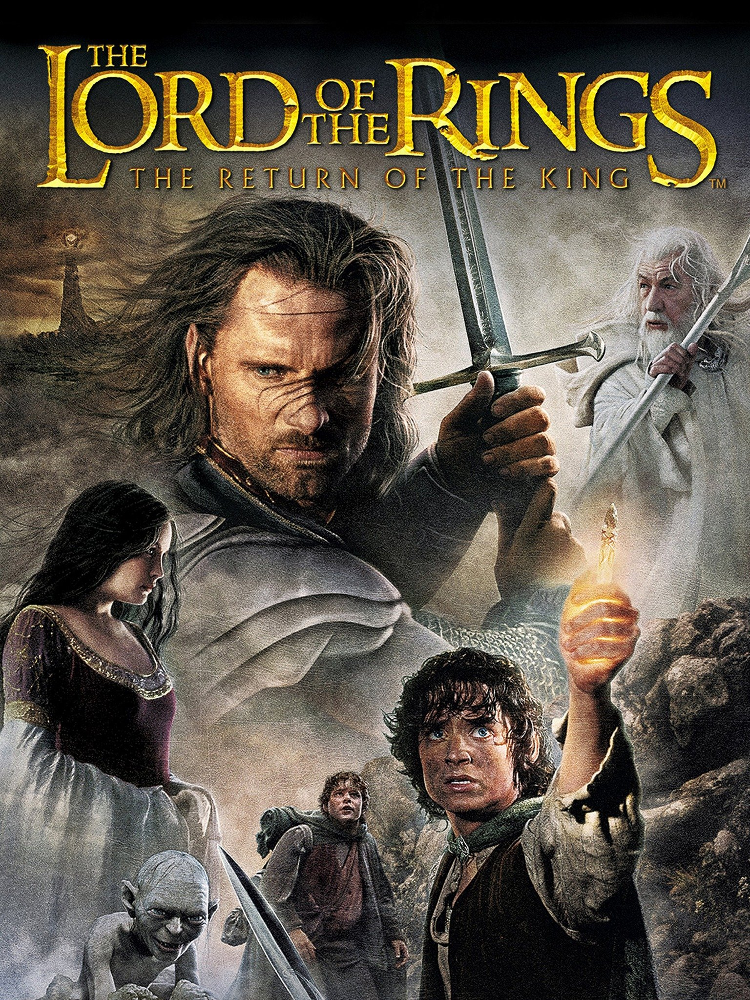

-
The Lord of the Rings: The Return of the King
 - Harry Potter and the Prisoner of Azkaban
- The Dark Knight
Merhaba adım Barış Osmanoğlu, İstanbul'da oturuyorum. Bilgisayar Programcılığı 2. sınıf öğrencisiyim, Kodluyoruz Frontend Web Development Patikası Eğitimine başladım :).